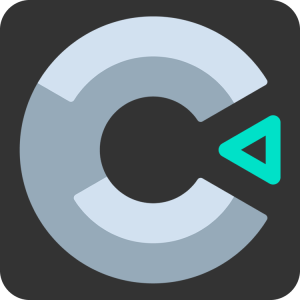

Esse jogo foi criado pela plataforma Construct 3, um software para criação de games 2D, esse jogo foi baseado em um exclusivo da Microsoft que foi lançado em 2022, um jogo 2D 100% repaginado com a estética do ano (iluminação e ambientação realista), mas o jogo em busca da Golden Apple tem uma estética antiga pois esse game foi feito utilizando o passe gratuito, que tem um limite de 40 ações para Animação de personagens e elementos do mapa.

Meu nome é Lucas Pedrozo tenho 18 anos, trabalho como freelancer em edição de Vídeos e Animador Gráfica e atuamente estou estudando para me tornar um programador web